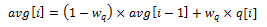

44. Quality of Service (QoS) Framework
This chapter describes the DPDK Quality of Service (QoS) framework.
44.1. Packet Pipeline with QoS Support
An example of a complex packet processing pipeline with QoS support is shown in the following figure.
Fig. 44.3 Complex Packet Processing Pipeline with QoS Support
This pipeline can be built using reusable DPDK software libraries. The main blocks implementing QoS in this pipeline are: the policer, the dropper and the scheduler. A functional description of each block is provided in the following table.
# |
Block |
Functional Description |
|---|---|---|
1 |
Packet I/O RX & TX |
Packet reception/ transmission from/to multiple NIC ports. Poll mode drivers (PMDs) for Intel 1 GbE/10 GbE NICs. |
2 |
Packet parser |
Identify the protocol stack of the input packet. Check the integrity of the packet headers. |
3 |
Flow classification |
Map the input packet to one of the known traffic flows. Exact match table lookup using configurable hash function (jhash, CRC and so on) and bucket logic to handle collisions. |
4 |
Policer |
Packet metering using srTCM (RFC 2697) or trTCM (RFC2698) algorithms. |
5 |
Load Balancer |
Distribute the input packets to the application workers. Provide uniform load to each worker. Preserve the affinity of traffic flows to workers and the packet order within each flow. |
6 |
Worker threads |
Placeholders for the customer specific application workload (for example, IP stack and so on). |
7 |
Dropper |
Congestion management using the Random Early Detection (RED) algorithm (specified by the Sally Floyd - Van Jacobson paper) or Weighted RED (WRED). Drop packets based on the current scheduler queue load level and packet priority. When congestion is experienced, lower priority packets are dropped first. |
8 |
Hierarchical Scheduler |
5-level hierarchical scheduler (levels are: output port, subport, pipe, traffic class and queue) with thousands (typically 64K) leaf nodes (queues). Implements traffic shaping (for subport and pipe levels), strict priority (for traffic class level) and Weighted Round Robin (WRR) (for queues within each pipe traffic class). |
The infrastructure blocks used throughout the packet processing pipeline are listed in the following table.
# |
Block |
Functional Description |
|---|---|---|
1 |
Buffer manager |
Support for global buffer pools and private per-thread buffer caches. |
2 |
Queue manager |
Support for message passing between pipeline blocks. |
3 |
Power saving |
Support for power saving during low activity periods. |
The mapping of pipeline blocks to CPU cores is configurable based on the performance level required by each specific application and the set of features enabled for each block. Some blocks might consume more than one CPU core (with each CPU core running a different instance of the same block on different input packets), while several other blocks could be mapped to the same CPU core.
44.2. Hierarchical Scheduler
The hierarchical scheduler block, when present, usually sits on the TX side just before the transmission stage. Its purpose is to prioritize the transmission of packets from different users and different traffic classes according to the policy specified by the Service Level Agreements (SLAs) of each network node.
44.2.1. Overview
The hierarchical scheduler block is similar to the traffic manager block used by network processors that typically implement per flow (or per group of flows) packet queuing and scheduling. It typically acts like a buffer that is able to temporarily store a large number of packets just before their transmission (enqueue operation); as the NIC TX is requesting more packets for transmission, these packets are later on removed and handed over to the NIC TX with the packet selection logic observing the predefined SLAs (dequeue operation).
Fig. 44.4 Hierarchical Scheduler Block Internal Diagram
The hierarchical scheduler is optimized for a large number of packet queues. When only a small number of queues are needed, message passing queues should be used instead of this block. See Worst Case Scenarios for Performance for a more detailed discussion.
44.2.2. Scheduling Hierarchy
The scheduling hierarchy is shown in Fig. 44.5. The first level of the hierarchy is the Ethernet TX port 1/10/40 GbE, with subsequent hierarchy levels defined as subport, pipe, traffic class and queue.
Typically, each subport represents a predefined group of users, while each pipe represents an individual user/subscriber. Each traffic class is the representation of a different traffic type with specific loss rate, delay and jitter requirements, such as voice, video or data transfers. Each queue hosts packets from one or multiple connections of the same type belonging to the same user.

Fig. 44.5 Scheduling Hierarchy per Port
The functionality of each hierarchical level is detailed in the following table.
# |
Level |
Siblings per Parent |
Functional Description |
|---|---|---|---|
1 |
Port |
|
|
2 |
Subport |
Configurable (default: 8) |
|
3 |
Pipe |
Configurable (default: 4K) |
|
4 |
Traffic Class (TC) |
13 |
|
5 |
Queue |
High priority TCs: 1, Lowest priority TC: 4 |
|
44.2.3. Application Programming Interface (API)
44.2.3.1. Port Scheduler Configuration API
The rte_sched.h file contains configuration functions for port, subport and pipe.
44.2.3.2. Port Scheduler Enqueue API
The port scheduler enqueue API is very similar to the API of the DPDK PMD TX function.
int rte_sched_port_enqueue(struct rte_sched_port *port, struct rte_mbuf **pkts, uint32_t n_pkts);
44.2.3.3. Port Scheduler Dequeue API
The port scheduler dequeue API is very similar to the API of the DPDK PMD RX function.
int rte_sched_port_dequeue(struct rte_sched_port *port, struct rte_mbuf **pkts, uint32_t n_pkts);
44.2.3.4. Usage Example
/* File "application.c" */
#define N_PKTS_RX 64
#define N_PKTS_TX 48
#define NIC_RX_PORT 0
#define NIC_RX_QUEUE 0
#define NIC_TX_PORT 1
#define NIC_TX_QUEUE 0
struct rte_sched_port *port = NULL;
struct rte_mbuf *pkts_rx[N_PKTS_RX], *pkts_tx[N_PKTS_TX];
uint32_t n_pkts_rx, n_pkts_tx;
/* Initialization */
<initialization code>
/* Runtime */
while (1) {
/* Read packets from NIC RX queue */
n_pkts_rx = rte_eth_rx_burst(NIC_RX_PORT, NIC_RX_QUEUE, pkts_rx, N_PKTS_RX);
/* Hierarchical scheduler enqueue */
rte_sched_port_enqueue(port, pkts_rx, n_pkts_rx);
/* Hierarchical scheduler dequeue */
n_pkts_tx = rte_sched_port_dequeue(port, pkts_tx, N_PKTS_TX);
/* Write packets to NIC TX queue */
rte_eth_tx_burst(NIC_TX_PORT, NIC_TX_QUEUE, pkts_tx, n_pkts_tx);
}
44.2.4. Implementation
44.2.4.1. Internal Data Structures per Port
A schematic of the internal data structures in shown in with details in.
Fig. 44.6 Internal Data Structures per Port
# |
Data structure |
Size (bytes) |
# per port |
Access type |
Description |
|
|---|---|---|---|---|---|---|
Enq |
Deq |
|||||
1 |
Subport table entry |
64 |
# subports per port |
Rd, Wr |
Persistent subport data (credits, etc). |
|
2 |
Pipe table entry |
64 |
# pipes per port |
Rd, Wr |
Persistent data for pipe, its TCs and its queues (credits, etc) that is updated during run-time. The pipe configuration parameters do not change during run-time. The same pipe configuration parameters are shared by multiple pipes, therefore they are not part of pipe table entry. |
|
3 |
Queue table entry |
4 |
#queues per port |
Rd, Wr |
Rd, Wr |
Persistent queue data (read and write pointers). The queue size is the same per TC for all queues, allowing the queue base address to be computed using a fast formula, so these two parameters are not part of queue table entry. The queue table entries for any given pipe are stored in the same cache line. |
4 |
Queue storage area |
Config (default: 64 x8) |
# queues per port |
Wr |
Rd |
Array of elements per queue; each element is 8 byte in size (mbuf pointer). |
5 |
Active queues bitmap |
1 bit per queue |
1 |
Wr (Set) |
Rd, Wr (Clear) |
The bitmap maintains one status bit per queue: queue not active (queue is empty) or queue active (queue is not empty). Queue bit is set by the scheduler enqueue and cleared by the scheduler dequeue when queue becomes empty. Bitmap scan operation returns the next non-empty pipe and its status (16-bit mask of active queue in the pipe). |
6 |
Grinder |
~128 |
Config (default: 8) |
Rd, Wr |
Short list of active pipes currently under processing. The grinder contains temporary data during pipe processing. Once the current pipe exhausts packets or credits, it is replaced with another active pipe from the bitmap. |
|
44.2.4.2. Multicore Scaling Strategy
The multicore scaling strategy is:
Running different physical ports on different threads. The enqueue and dequeue of the same port are run by the same thread.
Splitting the same physical port to different threads by running different sets of subports of the same physical port (virtual ports) on different threads. Similarly, a subport can be split into multiple subports that are each run by a different thread. The enqueue and dequeue of the same port are run by the same thread. This is only required if, for performance reasons, it is not possible to handle a full port with a single core.
44.2.4.2.1. Enqueue and Dequeue for the Same Output Port
Running enqueue and dequeue operations for the same output port from different cores is likely to cause significant impact on scheduler’s performance and it is therefore not recommended.
The port enqueue and dequeue operations share access to the following data structures:
Packet descriptors
Queue table
Queue storage area
Bitmap of active queues
The expected drop in performance is due to:
Need to make the queue and bitmap operations thread safe, which requires either using locking primitives for access serialization (for example, spinlocks/ semaphores) or using atomic primitives for lockless access (for example, Test and Set, Compare And Swap, an so on). The impact is much higher in the former case.
Ping-pong of cache lines storing the shared data structures between the cache hierarchies of the two cores (done transparently by the MESI protocol cache coherency CPU hardware).
Therefore, the scheduler enqueue and dequeue operations have to be run from the same thread, which allows the queues and the bitmap operations to be non-thread safe and keeps the scheduler data structures internal to the same core.
44.2.4.2.2. Performance Scaling
Scaling up the number of NIC ports simply requires a proportional increase in the number of CPU cores to be used for traffic scheduling.
44.2.4.3. Enqueue Pipeline
The sequence of steps per packet:
Access the mbuf to read the data fields required to identify the destination queue for the packet. These fields are: port, subport, traffic class and queue within traffic class, and are typically set by the classification stage.
Access the queue structure to identify the write location in the queue array. If the queue is full, then the packet is discarded.
Access the queue array location to store the packet (i.e. write the mbuf pointer).
It should be noted the strong data dependency between these steps, as steps 2 and 3 cannot start before the result from steps 1 and 2 becomes available, which prevents the processor out of order execution engine to provide any significant performance optimizations.
Given the high rate of input packets and the large amount of queues, it is expected that the data structures accessed to enqueue the current packet are not present in the L1 or L2 data cache of the current core, thus the above 3 memory accesses would result (on average) in L1 and L2 data cache misses. A number of 3 L1/L2 cache misses per packet is not acceptable for performance reasons.
The workaround is to prefetch the required data structures in advance. The prefetch operation has an execution latency during which the processor should not attempt to access the data structure currently under prefetch, so the processor should execute other work. The only other work available is to execute different stages of the enqueue sequence of operations on other input packets, thus resulting in a pipelined implementation for the enqueue operation.
Fig. 44.7 illustrates a pipelined implementation for the enqueue operation with 4 pipeline stages and each stage executing 2 different input packets. No input packet can be part of more than one pipeline stage at a given time.
Fig. 44.7 Prefetch Pipeline for the Hierarchical Scheduler Enqueue Operation
The congestion management scheme implemented by the enqueue pipeline described above is very basic: packets are enqueued until a specific queue becomes full, then all the packets destined to the same queue are dropped until packets are consumed (by the dequeue operation). This can be improved by enabling RED/WRED as part of the enqueue pipeline which looks at the queue occupancy and packet priority in order to yield the enqueue/drop decision for a specific packet (as opposed to enqueuing all packets / dropping all packets indiscriminately).
44.2.4.4. Dequeue State Machine
The sequence of steps to schedule the next packet from the current pipe is:
Identify the next active pipe using the bitmap scan operation, prefetch pipe.
Read pipe data structure. Update the credits for the current pipe and its subport. Identify the first active traffic class within the current pipe, select the next queue using WRR, prefetch queue pointers for all the 16 queues of the current pipe.
Read next element from the current WRR queue and prefetch its packet descriptor.
Read the packet length from the packet descriptor (mbuf structure). Based on the packet length and the available credits (of current pipe, pipe traffic class, subport and subport traffic class), take the go/no go scheduling decision for the current packet.
To avoid the cache misses, the above data structures (pipe, queue, queue array, mbufs) are prefetched in advance of being accessed. The strategy of hiding the latency of the prefetch operations is to switch from the current pipe (in grinder A) to another pipe (in grinder B) immediately after a prefetch is issued for the current pipe. This gives enough time to the prefetch operation to complete before the execution switches back to this pipe (in grinder A).
The dequeue pipe state machine exploits the data presence into the processor cache, therefore it tries to send as many packets from the same pipe TC and pipe as possible (up to the available packets and credits) before moving to the next active TC from the same pipe (if any) or to another active pipe.
Fig. 44.8 Pipe Prefetch State Machine for the Hierarchical Scheduler Dequeue Operation
44.2.4.5. Timing and Synchronization
The output port is modeled as a conveyor belt of byte slots that need to be filled by the scheduler with data for transmission. For 10 GbE, there are 1.25 billion byte slots that need to be filled by the port scheduler every second. If the scheduler is not fast enough to fill the slots, provided that enough packets and credits exist, then some slots will be left unused and bandwidth will be wasted.
In principle, the hierarchical scheduler dequeue operation should be triggered by NIC TX. Usually, once the occupancy of the NIC TX input queue drops below a predefined threshold, the port scheduler is woken up (interrupt based or polling based, by continuously monitoring the queue occupancy) to push more packets into the queue.
44.2.4.5.1. Internal Time Reference
The scheduler needs to keep track of time advancement for the credit logic, which requires credit updates based on time (for example, subport and pipe traffic shaping, traffic class upper limit enforcement, and so on).
Every time the scheduler decides to send a packet out to the NIC TX for transmission, the scheduler will increment its internal time reference accordingly. Therefore, it is convenient to keep the internal time reference in units of bytes, where a byte signifies the time duration required by the physical interface to send out a byte on the transmission medium. This way, as a packet is scheduled for transmission, the time is incremented with (n + h), where n is the packet length in bytes and h is the number of framing overhead bytes per packet.
44.2.4.5.2. Internal Time Reference Re-synchronization
The scheduler needs to align its internal time reference to the pace of the port conveyor belt. The reason is to make sure that the scheduler does not feed the NIC TX with more bytes than the line rate of the physical medium in order to prevent packet drop (by the scheduler, due to the NIC TX input queue being full, or later on, internally by the NIC TX).
The scheduler reads the current time on every dequeue invocation. The CPU time stamp can be obtained by reading either the Time Stamp Counter (TSC) register or the High Precision Event Timer (HPET) register. The current CPU time stamp is converted from number of CPU clocks to number of bytes: time_bytes = time_cycles / cycles_per_byte, where cycles_per_byte is the amount of CPU cycles that is equivalent to the transmission time for one byte on the wire (e.g. for a CPU frequency of 2 GHz and a 10GbE port,*cycles_per_byte = 1.6*).
The scheduler maintains an internal time reference of the NIC time. Whenever a packet is scheduled, the NIC time is incremented with the packet length (including framing overhead). On every dequeue invocation, the scheduler checks its internal reference of the NIC time against the current time:
If NIC time is in the future (NIC time >= current time), no adjustment of NIC time is needed. This means that scheduler is able to schedule NIC packets before the NIC actually needs those packets, so the NIC TX is well supplied with packets;
If NIC time is in the past (NIC time < current time), then NIC time should be adjusted by setting it to the current time. This means that the scheduler is not able to keep up with the speed of the NIC byte conveyor belt, so NIC bandwidth is wasted due to poor packet supply to the NIC TX.
44.2.4.5.3. Scheduler Accuracy and Granularity
The scheduler round trip delay (SRTD) is the time (number of CPU cycles) between two consecutive examinations of the same pipe by the scheduler.
To keep up with the output port (that is, avoid bandwidth loss), the scheduler should be able to schedule n packets faster than the same n packets are transmitted by NIC TX.
The scheduler needs to keep up with the rate of each individual pipe, as configured for the pipe token bucket, assuming that no port oversubscription is taking place. This means that the size of the pipe token bucket should be set high enough to prevent it from overflowing due to big SRTD, as this would result in credit loss (and therefore bandwidth loss) for the pipe.
44.2.4.6. Credit Logic
44.2.4.6.1. Scheduling Decision
The scheduling decision to send next packet from (subport S, pipe P, traffic class TC, queue Q) is favorable (packet is sent) when all the conditions below are met:
Pipe P of subport S is currently selected by one of the port grinders;
Traffic class TC is the highest priority active traffic class of pipe P;
Queue Q is the next queue selected by WRR within traffic class TC of pipe P;
Subport S has enough credits to send the packet;
Subport S has enough credits for traffic class TC to send the packet;
Pipe P has enough credits to send the packet;
Pipe P has enough credits for traffic class TC to send the packet.
If all the above conditions are met, then the packet is selected for transmission and the necessary credits are subtracted from subport S, subport S traffic class TC, pipe P, pipe P traffic class TC.
44.2.4.6.2. Framing Overhead
As the greatest common divisor for all packet lengths is one byte, the unit of credit is selected as one byte. The number of credits required for the transmission of a packet of n bytes is equal to (n+h), where h is equal to the number of framing overhead bytes per packet.
# |
Packet field |
Length (bytes) |
Comments |
|---|---|---|---|
1 |
Preamble |
7 |
|
2 |
Start of Frame Delimiter (SFD) |
1 |
|
3 |
Frame Check Sequence (FCS) |
4 |
Considered overhead only if not included in the mbuf packet length field. |
4 |
Inter Frame Gap (IFG) |
12 |
|
5 |
Total |
24 |
44.2.4.6.3. Traffic Shaping
The traffic shaping for subport and pipe is implemented using a token bucket per subport/per pipe. Each token bucket is implemented using one saturated counter that keeps track of the number of available credits.
The token bucket generic parameters and operations are presented in Table 44.6 and Table 44.7.
# |
Token Bucket Parameter |
Unit |
Description |
|---|---|---|---|
1 |
bucket_rate |
Credits per second |
Rate of adding credits to the bucket. |
2 |
bucket_size |
Credits |
Max number of credits that can be stored in the bucket. |
# |
Token Bucket Operation |
Description |
|---|---|---|
1 |
Initialization |
Bucket set to a predefined value, e.g. zero or half of the bucket size. |
2 |
Credit update |
Credits are added to the bucket on top of existing ones, either periodically or on demand, based on the bucket_rate. Credits cannot exceed the upper limit defined by the bucket_size, so any credits to be added to the bucket while the bucket is full are dropped. |
3 |
Credit consumption |
As result of packet scheduling, the necessary number of credits is removed from the bucket. The packet can only be sent if enough credits are in the bucket to send the full packet (packet bytes and framing overhead for the packet). |
To implement the token bucket generic operations described above, the current design uses the persistent data structure presented in Table 44.8, while the implementation of the token bucket operations is described in Table 44.9.
# |
Token bucket field |
Unit |
Description |
|---|---|---|---|
1 |
tb_time |
Bytes |
Time of the last credit update. Measured in bytes instead of seconds or CPU cycles for ease of credit consumption operation (as the current time is also maintained in bytes). See Section 26.2.4.5.1 “Internal Time Reference” for an explanation of why the time is maintained in byte units. |
2 |
tb_period |
Bytes |
Time period that should elapse since the last credit update in order for the bucket to be awarded tb_credits_per_period worth or credits. |
3 |
tb_credits_per_period |
Bytes |
Credit allowance per tb_period. |
4 |
tb_size |
Bytes |
Bucket size, i.e. upper limit for the tb_credits. |
5 |
tb_credits |
Bytes |
Number of credits currently in the bucket. |
The bucket rate (in bytes per second) can be computed with the following formula:
bucket_rate = (tb_credits_per_period / tb_period) * r
where, r = port line rate (in bytes per second).
# |
Token bucket operation |
Description |
|---|---|---|
1 |
Initialization |
tb_credits = 0; or tb_credits = tb_size / 2; |
2 |
Credit update |
Credit update options:
The current implementation is using option 3. According to Section Dequeue State Machine, the pipe and subport credits are updated every time a pipe is selected by the dequeue process before the pipe and subport credits are actually used. The implementation uses a tradeoff between accuracy and speed by updating the bucket credits only when at least a full tb_period has elapsed since the last update.
Update operations:
|
3 |
|
As result of packet scheduling, the necessary number of credits is removed from the bucket. The packet can only be sent if enough credits are in the bucket to send the full packet (packet bytes and framing overhead for the packet). Scheduling operations: pkt_credits = pkt_len + frame_overhead; if (tb_credits >= pkt_credits){tb_credits -= pkt_credits;} |
44.2.4.6.4. Traffic Classes
44.2.4.6.4.1. Implementation of Strict Priority Scheduling
Strict priority scheduling of traffic classes within the same pipe is implemented by the pipe dequeue state machine, which selects the queues in ascending order. Therefore, queue 0 (associated with TC 0, highest priority TC) is handled before queue 1 (TC 1, lower priority than TC 0), which is handled before queue 2 (TC 2, lower priority than TC 1) and it conitnues until queues of all TCs except the lowest priority TC are handled. At last, queues 12..15 (best effort TC, lowest priority TC) are handled.
44.2.4.6.4.2. Upper Limit Enforcement
The traffic classes at the pipe and subport levels are not traffic shaped, so there is no token bucket maintained in this context. The upper limit for the traffic classes at the subport and pipe levels is enforced by periodically refilling the subport / pipe traffic class credit counter, out of which credits are consumed every time a packet is scheduled for that subport / pipe, as described in Table 44.10 and Table 44.11.
# |
Subport or pipe field |
Unit |
Description |
|---|---|---|---|
1 |
tc_time |
Bytes |
Time of the next update (upper limit refill) for the TCs of the current subport / pipe. See Section Internal Time Reference for the explanation of why the time is maintained in byte units. |
2 |
tc_period |
Bytes |
Time between two consecutive updates for the all TCs of the current subport / pipe. This is expected to be many times bigger than the typical value of the token bucket tb_period. |
3 |
tc_credits_per_period |
Bytes |
Upper limit for the number of credits allowed to be consumed by the current TC during each enforcement period tc_period. |
4 |
tc_credits |
Bytes |
Current upper limit for the number of credits that can be consumed by the current traffic class for the remainder of the current enforcement period. |
# |
Traffic Class Operation |
Description |
|---|---|---|
1 |
Initialization |
tc_credits = tc_credits_per_period; tc_time = tc_period; |
2 |
Credit update |
Update operations: if (time >= tc_time) { tc_credits = tc_credits_per_period; tc_time = time + tc_period; } |
3 |
Credit consumption (on packet scheduling) |
As result of packet scheduling, the TC limit is decreased with the necessary number of credits. The packet can only be sent if enough credits are currently available in the TC limit to send the full packet (packet bytes and framing overhead for the packet). Scheduling operations: pkt_credits = pk_len + frame_overhead; if (tc_credits >= pkt_credits) {tc_credits -= pkt_credits;} |
44.2.4.6.5. Weighted Round Robin (WRR)
The evolution of the WRR design solution for the lowest priority traffic class (best effort TC) from simple to complex is shown in Table 44.12.
# |
All Queues Active? |
Equal Weights for All Queues? |
All Packets Equal? |
Strategy |
|---|---|---|---|---|
1 |
Yes |
Yes |
Yes |
Byte level round robin Next queue queue #i, i = (i + 1) % n |
2 |
Yes |
Yes |
No |
Packet level round robin Consuming one byte from queue #i requires consuming exactly one token for queue #i. T(i) = Accumulated number of tokens previously consumed from queue #i. Every time a packet is consumed from queue #i, T(i) is updated as: T(i) += pkt_len. Next queue : queue with the smallest T. |
3 |
Yes |
No |
No |
Packet level weighted round robin This case can be reduced to the previous case by introducing a cost per byte that is different for each queue. Queues with lower weights have a higher cost per byte. This way, it is still meaningful to compare the consumption amongst different queues in order to select the next queue. w(i) = Weight of queue #i t(i) = Tokens per byte for queue #i, defined as the inverse weight of queue #i. For example, if w[0..3] = [1:2:4:8], then t[0..3] = [8:4:2:1]; if w[0..3] = [1:4:15:20], then t[0..3] = [60:15:4:3]. Consuming one byte from queue #i requires consuming t(i) tokens for queue #i. T(i) = Accumulated number of tokens previously consumed from queue #i. Every time a packet is consumed from queue #i, T(i) is updated as: T(i) += pkt_len * t(i). Next queue : queue with the smallest T. |
4 |
No |
No |
No |
Packet level weighted round robin with variable queue status Reduce this case to the previous case by setting the consumption of inactive queues to a high number, so that the inactive queues will never be selected by the smallest T logic. To prevent T from overflowing as result of successive accumulations, T(i) is truncated after each packet consumption for all queues. For example, T[0..3] = [1000, 1100, 1200, 1300] is truncated to T[0..3] = [0, 100, 200, 300] by subtracting the min T from T(i), i = 0..n. This requires having at least one active queue in the set of input queues, which is guaranteed by the dequeue state machine never selecting an inactive traffic class. mask(i) = Saturation mask for queue #i, defined as: mask(i) = (queue #i is active)? 0 : 0xFFFFFFFF; w(i) = Weight of queue #i t(i) = Tokens per byte for queue #i, defined as the inverse weight of queue #i. T(i) = Accumulated numbers of tokens previously consumed from queue #i. Next queue : queue with smallest T. Before packet consumption from queue #i: T(i) |= mask(i) After packet consumption from queue #i: T(j) -= T(i), j != i T(i) = pkt_len * t(i) Note: T(j) uses the T(i) value before T(i) is updated. |
44.2.4.6.6. Subport Traffic Class Oversubscription
44.2.4.6.6.1. Problem Statement
Oversubscription for subport traffic class X is a configuration-time event that occurs when more bandwidth is allocated for traffic class X at the level of subport member pipes than allocated for the same traffic class at the parent subport level.
The existence of the oversubscription for a specific subport and traffic class is solely the result of pipe and subport-level configuration as opposed to being created due to dynamic evolution of the traffic load at run-time (as congestion is).
When the overall demand for traffic class X for the current subport is low, the existence of the oversubscription condition does not represent a problem, as demand for traffic class X is completely satisfied for all member pipes. However, this can no longer be achieved when the aggregated demand for traffic class X for all subport member pipes exceeds the limit configured at the subport level.
44.2.4.6.6.2. Solution Space
summarizes some of the possible approaches for handling this problem, with the third approach selected for implementation.
No. |
Approach |
Description |
|---|---|---|
1 |
Don’t care |
First come, first served. This approach is not fair amongst subport member pipes, as pipes that are served first will use up as much bandwidth for TC X as they need, while pipes that are served later will receive poor service due to bandwidth for TC X at the subport level being scarce. |
2 |
Scale down all pipes |
All pipes within the subport have their bandwidth limit for TC X scaled down by the same factor. This approach is not fair among subport member pipes, as the low end pipes (that is, pipes configured with low bandwidth) can potentially experience severe service degradation that might render their service unusable (if available bandwidth for these pipes drops below the minimum requirements for a workable service), while the service degradation for high end pipes might not be noticeable at all. |
3 |
Cap the high demand pipes |
Each subport member pipe receives an equal share of the bandwidth available at run-time for TC X at the subport level. Any bandwidth left unused by the low-demand pipes is redistributed in equal portions to the high-demand pipes. This way, the high-demand pipes are truncated while the low-demand pipes are not impacted. |
Typically, the subport TC oversubscription feature is enabled only for the lowest priority traffic class, which is typically used for best effort traffic, with the management plane preventing this condition from occurring for the other (higher priority) traffic classes.
To ease implementation, it is also assumed that the upper limit for subport best effort TC is set to 100% of the subport rate, and that the upper limit for pipe best effort TC is set to 100% of pipe rate for all subport member pipes.
44.2.4.6.6.3. Implementation Overview
The algorithm computes a watermark, which is periodically updated based on the current demand experienced by the subport member pipes, whose purpose is to limit the amount of traffic that each pipe is allowed to send for best effort TC. The watermark is computed at the subport level at the beginning of each traffic class upper limit enforcement period and the same value is used by all the subport member pipes throughout the current enforcement period. illustrates how the watermark computed as subport level at the beginning of each period is propagated to all subport member pipes.
At the beginning of the current enforcement period (which coincides with the end of the previous enforcement period), the value of the watermark is adjusted based on the amount of bandwidth allocated to best effort TC at the beginning of the previous period that was not left unused by the subport member pipes at the end of the previous period.
If there was subport best effort TC bandwidth left unused, the value of the watermark for the current period is increased to encourage the subport member pipes to consume more bandwidth. Otherwise, the value of the watermark is decreased to enforce equality of bandwidth consumption among subport member pipes for best effort TC.
The increase or decrease in the watermark value is done in small increments, so several enforcement periods might be required to reach the equilibrium state. This state can change at any moment due to variations in the demand experienced by the subport member pipes for best effort TC, for example, as a result of demand increase (when the watermark needs to be lowered) or demand decrease (when the watermark needs to be increased).
When demand is low, the watermark is set high to prevent it from impeding the subport member pipes from consuming more bandwidth. The highest value for the watermark is picked as the highest rate configured for a subport member pipe. Table 44.14 and Table 44.15 illustrates the watermark operation.
No. |
Subport Traffic Class Operation |
Description |
|---|---|---|
1 |
Initialization |
Subport level: subport_period_id= 0 Pipe level: pipe_period_id = 0 |
2 |
Credit update |
Subport Level: if (time>=subport_tc_time)
} Pipelevel: if(pipe_period_id != subport_period_id) {
} |
3 |
Credit consumption (on packet scheduling) |
Pipe level: pkt_credits = pk_len + frame_overhead; if(pipe_ov_credits >= pkt_credits{
} |
No. |
Subport Traffic Class Operation |
Description |
|---|---|---|
1 |
Initialization |
Subport level: wm = WM_MAX |
2 |
Credit update |
Subport level (water_mark_update): tc0_cons = subport_tc0_credits_per_period - subport_tc0_credits; tc1_cons = subport_tc1_credits_per_period - subport_tc1_credits; tc2_cons = subport_tc2_credits_per_period - subport_tc2_credits; tc3_cons = subport_tc3_credits_per_period - subport_tc3_credits; tc4_cons = subport_tc4_credits_per_period - subport_tc4_credits; tc5_cons = subport_tc5_credits_per_period - subport_tc5_credits; tc6_cons = subport_tc6_credits_per_period - subport_tc6_credits; tc7_cons = subport_tc7_credits_per_period - subport_tc7_credits; tc8_cons = subport_tc8_credits_per_period - subport_tc8_credits; tc9_cons = subport_tc9_credits_per_period - subport_tc9_credits; tc10_cons = subport_tc10_credits_per_period - subport_tc10_credits; tc11_cons = subport_tc11_credits_per_period - subport_tc11_credits; tc_be_cons_max = subport_tc_be_credits_per_period - (tc0_cons + tc1_cons + tc2_cons + tc3_cons + tc4_cons + tc5_cons + tc6_cons + tc7_cons + tc8_cons + tc9_cons + tc10_cons + tc11_cons); if(tc_be_consumption > (tc_be_consumption_max - MTU)){
} else {
} |
44.2.5. Worst Case Scenarios for Performance
44.2.5.1. Lots of Active Queues with Not Enough Credits
The more queues the scheduler has to examine for packets and credits in order to select one packet, the lower the performance of the scheduler is.
The scheduler maintains the bitmap of active queues, which skips the non-active queues, but in order to detect whether a specific pipe has enough credits, the pipe has to be drilled down using the pipe dequeue state machine, which consumes cycles regardless of the scheduling result (no packets are produced or at least one packet is produced).
This scenario stresses the importance of the policer for the scheduler performance: if the pipe does not have enough credits, its packets should be dropped as soon as possible (before they reach the hierarchical scheduler), thus rendering the pipe queues as not active, which allows the dequeue side to skip that pipe with no cycles being spent on investigating the pipe credits that would result in a “not enough credits” status.
44.2.5.2. Single Queue with 100% Line Rate
The port scheduler performance is optimized for a large number of queues. If the number of queues is small, then the performance of the port scheduler for the same level of active traffic is expected to be worse than the performance of a small set of message passing queues.
44.3. Dropper
The purpose of the DPDK dropper is to drop packets arriving at a packet scheduler to avoid congestion. The dropper supports the Random Early Detection (RED), Weighted Random Early Detection (WRED) and tail drop algorithms. Fig. 44.9 illustrates how the dropper integrates with the scheduler. The DPDK currently does not support congestion management so the dropper provides the only method for congestion avoidance.
Fig. 44.9 High-level Block Diagram of the DPDK Dropper
The dropper uses the Random Early Detection (RED) congestion avoidance algorithm as documented in the reference publication. The purpose of the RED algorithm is to monitor a packet queue, determine the current congestion level in the queue and decide whether an arriving packet should be enqueued or dropped. The RED algorithm uses an Exponential Weighted Moving Average (EWMA) filter to compute average queue size which gives an indication of the current congestion level in the queue.
For each enqueue operation, the RED algorithm compares the average queue size to minimum and maximum thresholds. Depending on whether the average queue size is below, above or in between these thresholds, the RED algorithm calculates the probability that an arriving packet should be dropped and makes a random decision based on this probability.
The dropper also supports Weighted Random Early Detection (WRED) by allowing the scheduler to select different RED configurations for the same packet queue at run-time. In the case of severe congestion, the dropper resorts to tail drop. This occurs when a packet queue has reached maximum capacity and cannot store any more packets. In this situation, all arriving packets are dropped.
The flow through the dropper is illustrated in Fig. 44.10. The RED/WRED algorithm is exercised first and tail drop second.
Fig. 44.10 Flow Through the Dropper
The use cases supported by the dropper are:
Initialize configuration data
Initialize run-time data
Enqueue (make a decision to enqueue or drop an arriving packet)
Mark empty (record the time at which a packet queue becomes empty)
The configuration use case is explained in Section2.23.3.1, the enqueue operation is explained in Section 2.23.3.2 and the mark empty operation is explained in Section 2.23.3.3.
44.3.1. Configuration
A RED configuration contains the parameters given in Table 44.16.
Parameter |
Minimum |
Maximum |
Typical |
|---|---|---|---|
Minimum Threshold |
0 |
1022 |
1/4 x queue size |
Maximum Threshold |
1 |
1023 |
1/2 x queue size |
Inverse Mark Probability |
1 |
255 |
10 |
EWMA Filter Weight |
1 |
12 |
9 |
The meaning of these parameters is explained in more detail in the following sections. The format of these parameters as specified to the dropper module API corresponds to the format used by Cisco* in their RED implementation. The minimum and maximum threshold parameters are specified to the dropper module in terms of number of packets. The mark probability parameter is specified as an inverse value, for example, an inverse mark probability parameter value of 10 corresponds to a mark probability of 1/10 (that is, 1 in 10 packets will be dropped). The EWMA filter weight parameter is specified as an inverse log value, for example, a filter weight parameter value of 9 corresponds to a filter weight of 1/29.
44.3.2. Enqueue Operation
In the example shown in Fig. 44.11, q (actual queue size) is the input value, avg (average queue size) and count (number of packets since the last drop) are run-time values, decision is the output value and the remaining values are configuration parameters.

Fig. 44.11 Example Data Flow Through Dropper
44.3.2.1. EWMA Filter Microblock
The purpose of the EWMA Filter microblock is to filter queue size values to smooth out transient changes that result from “bursty” traffic. The output value is the average queue size which gives a more stable view of the current congestion level in the queue.
The EWMA filter has one configuration parameter, filter weight, which determines how quickly or slowly the average queue size output responds to changes in the actual queue size input. Higher values of filter weight mean that the average queue size responds more quickly to changes in actual queue size.
44.3.2.1.1. Average Queue Size Calculation when the Queue is not Empty
The definition of the EWMA filter is given in the following equation.
Where:
avg = average queue size
wq = filter weight
q = actual queue size
Note
- The filter weight, wq = 1/2^n, where n is the filter weight parameter value passed to the dropper module
on configuration (see Section2.23.3.1 ).
44.3.2.2. Average Queue Size Calculation when the Queue is Empty
The EWMA filter does not read time stamps and instead assumes that enqueue operations will happen quite regularly. Special handling is required when the queue becomes empty as the queue could be empty for a short time or a long time. When the queue becomes empty, average queue size should decay gradually to zero instead of dropping suddenly to zero or remaining stagnant at the last computed value. When a packet is enqueued on an empty queue, the average queue size is computed using the following formula:

Where:
m = the number of enqueue operations that could have occurred on this queue while the queue was empty
In the dropper module, m is defined as:
Where:
time = current time
qtime = time the queue became empty
s = typical time between successive enqueue operations on this queue
The time reference is in units of bytes, where a byte signifies the time duration required by the physical interface to send out a byte on the transmission medium (see Section Internal Time Reference). The parameter s is defined in the dropper module as a constant with the value: s=2^22. This corresponds to the time required by every leaf node in a hierarchy with 64K leaf nodes to transmit one 64-byte packet onto the wire and represents the worst case scenario. For much smaller scheduler hierarchies, it may be necessary to reduce the parameter s, which is defined in the red header source file (rte_red.h) as:
#define RTE_RED_S
Since the time reference is in bytes, the port speed is implied in the expression: time-qtime. The dropper does not have to be configured with the actual port speed. It adjusts automatically to low speed and high speed links.
44.3.2.2.1. Implementation
A numerical method is used to compute the factor (1-wq)^m that appears in Equation 2.
This method is based on the following identity:
This allows us to express the following:

In the dropper module, a look-up table is used to compute log2(1-wq) for each value of wq supported by the dropper module. The factor (1-wq)^m can then be obtained by multiplying the table value by m and applying shift operations. To avoid overflow in the multiplication, the value, m, and the look-up table values are limited to 16 bits. The total size of the look-up table is 56 bytes. Once the factor (1-wq)^m is obtained using this method, the average queue size can be calculated from Equation 2.
44.3.2.2.2. Alternative Approaches
Other methods for calculating the factor (1-wq)^m in the expression for computing average queue size when the queue is empty (Equation 2) were considered. These approaches include:
Floating-point evaluation
Fixed-point evaluation using a small look-up table (512B) and up to 16 multiplications (this is the approach used in the FreeBSD* ALTQ RED implementation)
Fixed-point evaluation using a small look-up table (512B) and 16 SSE multiplications (SSE optimized version of the approach used in the FreeBSD* ALTQ RED implementation)
Large look-up table (76 KB)
The method that was finally selected (described above in Section 26.3.2.2.1) out performs all of these approaches in terms of run-time performance and memory requirements and also achieves accuracy comparable to floating-point evaluation. Table 44.17 lists the performance of each of these alternative approaches relative to the method that is used in the dropper. As can be seen, the floating-point implementation achieved the worst performance.
Method |
Relative Performance |
|---|---|
Current dropper method (see Section 23.3.2.1.3) |
100% |
Fixed-point method with small (512B) look-up table |
148% |
SSE method with small (512B) look-up table |
114% |
Large (76KB) look-up table |
118% |
Floating-point |
595% |
Note: In this case, since performance is expressed as time spent executing the operation in a specific condition, any relative performance value above 100% runs slower than the reference method. |
|
44.3.2.3. Drop Decision Block
The Drop Decision block:
Compares the average queue size with the minimum and maximum thresholds
Calculates a packet drop probability
Makes a random decision to enqueue or drop an arriving packet
The calculation of the drop probability occurs in two stages. An initial drop probability is calculated based on the average queue size, the minimum and maximum thresholds and the mark probability. An actual drop probability is then computed from the initial drop probability. The actual drop probability takes the count run-time value into consideration so that the actual drop probability increases as more packets arrive to the packet queue since the last packet was dropped.
44.3.2.3.1. Initial Packet Drop Probability
The initial drop probability is calculated using the following equation.
Where:
maxp = mark probability
avg = average queue size
minth = minimum threshold
maxth = maximum threshold
The calculation of the packet drop probability using Equation 3 is illustrated in Fig. 44.12. If the average queue size is below the minimum threshold, an arriving packet is enqueued. If the average queue size is at or above the maximum threshold, an arriving packet is dropped. If the average queue size is between the minimum and maximum thresholds, a drop probability is calculated to determine if the packet should be enqueued or dropped.

Fig. 44.12 Packet Drop Probability for a Given RED Configuration
44.3.2.3.2. Actual Drop Probability
If the average queue size is between the minimum and maximum thresholds, then the actual drop probability is calculated from the following equation.

Where:
Pb = initial drop probability (from Equation 3)
count = number of packets that have arrived since the last drop
The constant 2, in Equation 4 is the only deviation from the drop probability formulae given in the reference document where a value of 1 is used instead. It should be noted that the value pa computed from can be negative or greater than 1. If this is the case, then a value of 1 should be used instead.
The initial and actual drop probabilities are shown in Fig. 44.13. The actual drop probability is shown for the case where the formula given in the reference document1 is used (blue curve) and also for the case where the formula implemented in the dropper module, is used (red curve). The formula in the reference document results in a significantly higher drop rate compared to the mark probability configuration parameter specified by the user. The choice to deviate from the reference document is simply a design decision and one that has been taken by other RED implementations, for example, FreeBSD* ALTQ RED.
Fig. 44.13 Initial Drop Probability (pb), Actual Drop probability (pa) Computed Using a Factor 1 (Blue Curve) and a Factor 2 (Red Curve)
44.3.3. Queue Empty Operation
The time at which a packet queue becomes empty must be recorded and saved with the RED run-time data so that the EWMA filter block can calculate the average queue size on the next enqueue operation. It is the responsibility of the calling application to inform the dropper module through the API that a queue has become empty.
44.3.4. Source Files Location
The source files for the DPDK dropper are located at:
DPDK/lib/librte_sched/rte_red.h
DPDK/lib/librte_sched/rte_red.c
44.3.5. Integration with the DPDK QoS Scheduler
RED functionality in the DPDK QoS scheduler is disabled by default. The parameter is found in the build configuration files in the DPDK/config directory. RED configuration parameters are specified in the rte_red_params structure within the rte_sched_port_params structure that is passed to the scheduler on initialization. RED parameters are specified separately for four traffic classes and three packet colors (green, yellow and red) allowing the scheduler to implement Weighted Random Early Detection (WRED).
44.3.6. Integration with the DPDK QoS Scheduler Sample Application
The DPDK QoS Scheduler Application reads a configuration file on start-up. The configuration file includes a section containing RED parameters. The format of these parameters is described in Section2.23.3.1. A sample RED configuration is shown below. In this example, the queue size is 64 packets.
Note
For correct operation, the same EWMA filter weight parameter (wred weight) should be used for each packet color (green, yellow, red) in the same traffic class (tc).
; RED params per traffic class and color (Green / Yellow / Red)
[red]
tc 0 wred min = 28 22 16
tc 0 wred max = 32 32 32
tc 0 wred inv prob = 10 10 10
tc 0 wred weight = 9 9 9
tc 1 wred min = 28 22 16
tc 1 wred max = 32 32 32
tc 1 wred inv prob = 10 10 10
tc 1 wred weight = 9 9 9
tc 2 wred min = 28 22 16
tc 2 wred max = 32 32 32
tc 2 wred inv prob = 10 10 10
tc 2 wred weight = 9 9 9
tc 3 wred min = 28 22 16
tc 3 wred max = 32 32 32
tc 3 wred inv prob = 10 10 10
tc 3 wred weight = 9 9 9
tc 4 wred min = 28 22 16
tc 4 wred max = 32 32 32
tc 4 wred inv prob = 10 10 10
tc 4 wred weight = 9 9 9
tc 5 wred min = 28 22 16
tc 5 wred max = 32 32 32
tc 5 wred inv prob = 10 10 10
tc 5 wred weight = 9 9 9
tc 6 wred min = 28 22 16
tc 6 wred max = 32 32 32
tc 6 wred inv prob = 10 10 10
tc 6 wred weight = 9 9 9
tc 7 wred min = 28 22 16
tc 7 wred max = 32 32 32
tc 7 wred inv prob = 10 10 10
tc 7 wred weight = 9 9 9
tc 8 wred min = 28 22 16
tc 8 wred max = 32 32 32
tc 8 wred inv prob = 10 10 10
tc 8 wred weight = 9 9 9
tc 9 wred min = 28 22 16
tc 9 wred max = 32 32 32
tc 9 wred inv prob = 10 10 10
tc 9 wred weight = 9 9 9
tc 10 wred min = 28 22 16
tc 10 wred max = 32 32 32
tc 10 wred inv prob = 10 10 10
tc 10 wred weight = 9 9 9
tc 11 wred min = 28 22 16
tc 11 wred max = 32 32 32
tc 11 wred inv prob = 10 10 10
tc 11 wred weight = 9 9 9
tc 12 wred min = 28 22 16
tc 12 wred max = 32 32 32
tc 12 wred inv prob = 10 10 10
tc 12 wred weight = 9 9 9
With this configuration file, the RED configuration that applies to green, yellow and red packets in traffic class 0 is shown in Table 44.18.
RED Parameter |
Configuration Name |
Green |
Yellow |
Red |
|---|---|---|---|---|
Minimum Threshold |
tc 0 wred min |
28 |
22 |
16 |
Maximum Threshold |
tc 0 wred max |
32 |
32 |
32 |
Mark Probability |
tc 0 wred inv prob |
10 |
10 |
10 |
EWMA Filter Weight |
tc 0 wred weight |
9 |
9 |
9 |
44.3.7. Application Programming Interface (API)
44.3.7.1. Enqueue API
The syntax of the enqueue API is as follows:
int rte_red_enqueue(const struct rte_red_config *red_cfg, struct rte_red *red, const unsigned q, const uint64_t time)
The arguments passed to the enqueue API are configuration data, run-time data, the current size of the packet queue (in packets) and a value representing the current time. The time reference is in units of bytes, where a byte signifies the time duration required by the physical interface to send out a byte on the transmission medium (see Section 26.2.4.5.1 “Internal Time Reference” ). The dropper reuses the scheduler time stamps for performance reasons.
44.3.7.2. Empty API
The syntax of the empty API is as follows:
void rte_red_mark_queue_empty(struct rte_red *red, const uint64_t time)
The arguments passed to the empty API are run-time data and the current time in bytes.
44.4. Traffic Metering
The traffic metering component implements the Single Rate Three Color Marker (srTCM) and Two Rate Three Color Marker (trTCM) algorithms, as defined by IETF RFC 2697 and 2698 respectively. These algorithms meter the stream of incoming packets based on the allowance defined in advance for each traffic flow. As result, each incoming packet is tagged as green, yellow or red based on the monitored consumption of the flow the packet belongs to.
44.4.1. Functional Overview
The srTCM algorithm defines two token buckets for each traffic flow, with the two buckets sharing the same token update rate:
Committed (C) bucket: fed with tokens at the rate defined by the Committed Information Rate (CIR) parameter (measured in IP packet bytes per second). The size of the C bucket is defined by the Committed Burst Size (CBS) parameter (measured in bytes);
Excess (E) bucket: fed with tokens at the same rate as the C bucket. The size of the E bucket is defined by the Excess Burst Size (EBS) parameter (measured in bytes).
The trTCM algorithm defines two token buckets for each traffic flow, with the two buckets being updated with tokens at independent rates:
Committed (C) bucket: fed with tokens at the rate defined by the Committed Information Rate (CIR) parameter (measured in bytes of IP packet per second). The size of the C bucket is defined by the Committed Burst Size (CBS) parameter (measured in bytes);
Peak (P) bucket: fed with tokens at the rate defined by the Peak Information Rate (PIR) parameter (measured in IP packet bytes per second). The size of the P bucket is defined by the Peak Burst Size (PBS) parameter (measured in bytes).
Please refer to RFC 2697 (for srTCM) and RFC 2698 (for trTCM) for details on how tokens are consumed from the buckets and how the packet color is determined.
44.4.1.1. Color Blind and Color Aware Modes
For both algorithms, the color blind mode is functionally equivalent to the color aware mode with input color set as green. For color aware mode, a packet with red input color can only get the red output color, while a packet with yellow input color can only get the yellow or red output colors.
The reason why the color blind mode is still implemented distinctly than the color aware mode is that color blind mode can be implemented with fewer operations than the color aware mode.
44.4.2. Implementation Overview
For each input packet, the steps for the srTCM / trTCM algorithms are:
Update the C and E / P token buckets. This is done by reading the current time (from the CPU timestamp counter), identifying the amount of time since the last bucket update and computing the associated number of tokens (according to the pre-configured bucket rate). The number of tokens in the bucket is limited by the pre-configured bucket size;
Identify the output color for the current packet based on the size of the IP packet and the amount of tokens currently available in the C and E / P buckets; for color aware mode only, the input color of the packet is also considered. When the output color is not red, a number of tokens equal to the length of the IP packet are subtracted from the C or E /P or both buckets, depending on the algorithm and the output color of the packet.